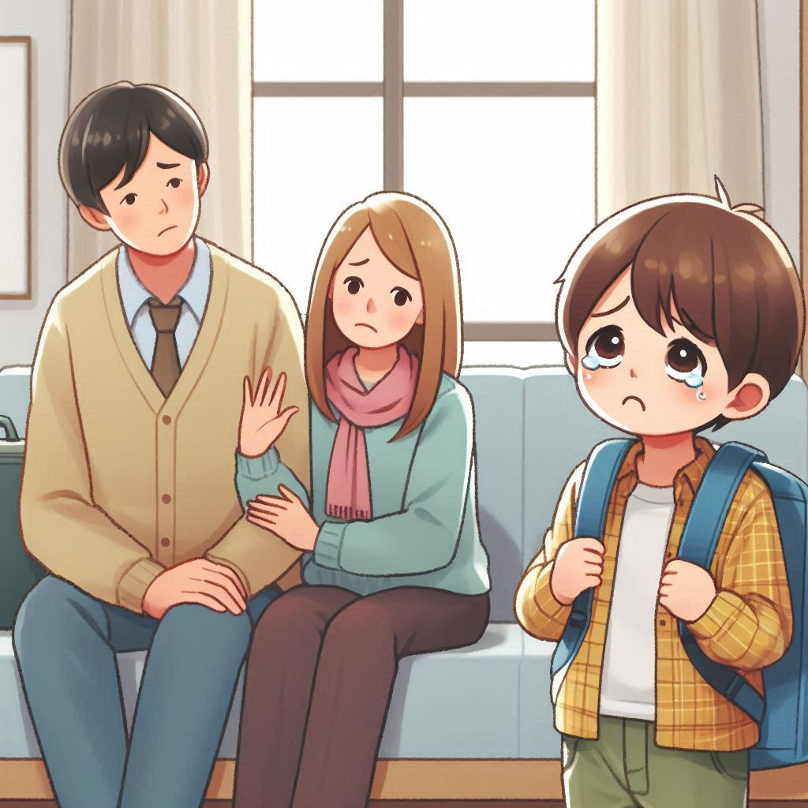

안녕을 말할땐 천천히
목차
작가
모니크 폴락
출판일
2021년
감상평에 대한 AI그림
가족을 잃은 아이들이 모인 상담 모임을 다루는 소설.
너무나 이른 나이에 가족을 잃은 아이들이 아직 죽음을 받아들이지 못하거나, 어린 아이의 순수한 시점에서 표현한 모습이 너무나 인상적이다.
여러명이서 함께 슬픔을 이겨내기 위해 함께하는 모습이 기억에 남는다.

감상평에 대한 AI평가
주제와 감정이 잘 드러나며, 소설의 핵심 메시지를 명확하게 이해하고 있는 감상평이야. 표현만 조금 다듬으면 더욱 자연스러워질 것 같아. 전반적으로 인상 깊은 평가라고 생각해!
✨ "너무나 이른 나이에 가족을 잃은 아이들"과 "여러명이서 함께 슬픔을 이겨내기 위해 노력하는 모습" 등의 표현이 직관적이고 감정을 잘 전달하고 있어. 다만, 문장이 조금 더 다듬어진다면 더 매끄럽게 읽힐 수 있을 것 같아.
✨ 소설의 중심 소재인 가족을 잃은 아이들의 상담 모임과 그들이 겪는 슬픔, 상실의 과정을 잘 파악했어. 특히 아이들이 죽음을 받아들이지 못하는 모습과 어린 시점에서의 순수한 표현을 강조한 점이 주제 이해에 큰 도움이 돼.
✨ 소설이 남긴 인상(아이들의 슬픔과 회복 노력)에 대해 구체적으로 언급한 점이 좋아. 감상자의 개인적인 느낌과 소설의 감동이 어떻게 연결되는지 드러난 점에서 깊이 있는 해석이 돋보여.